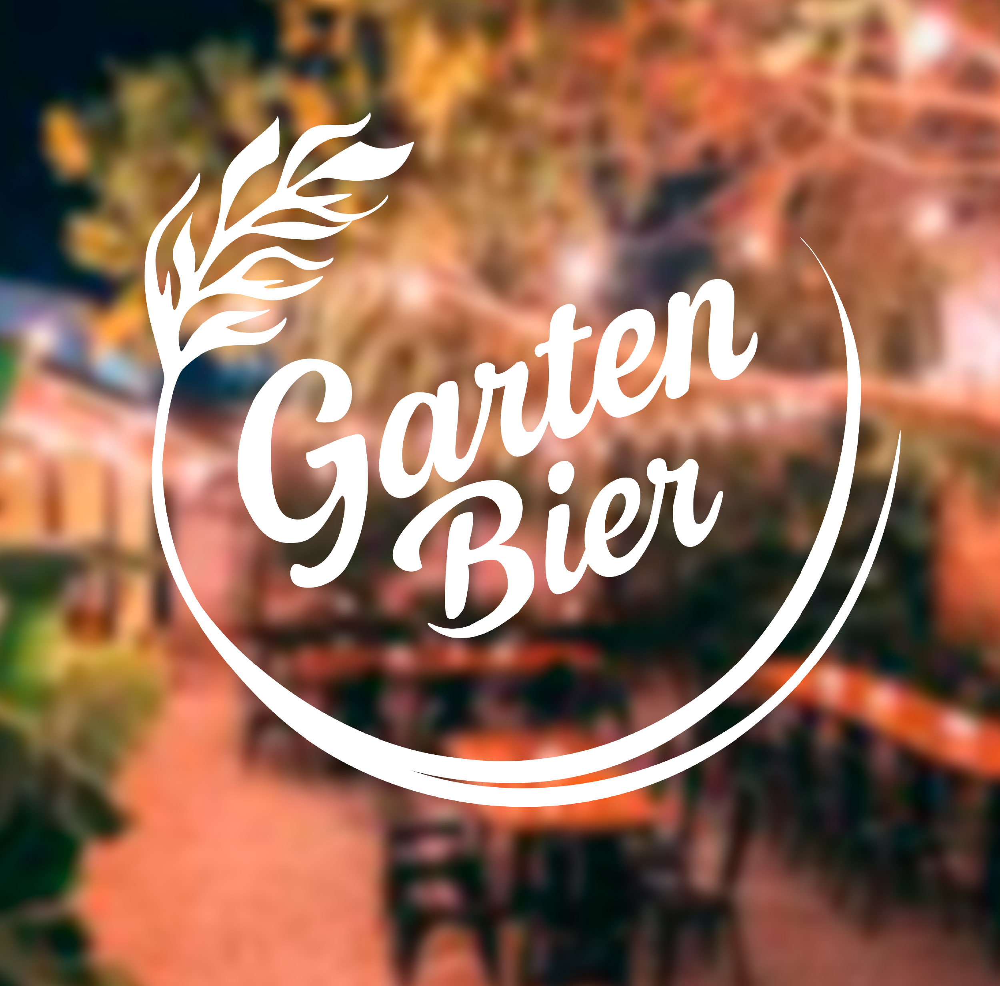
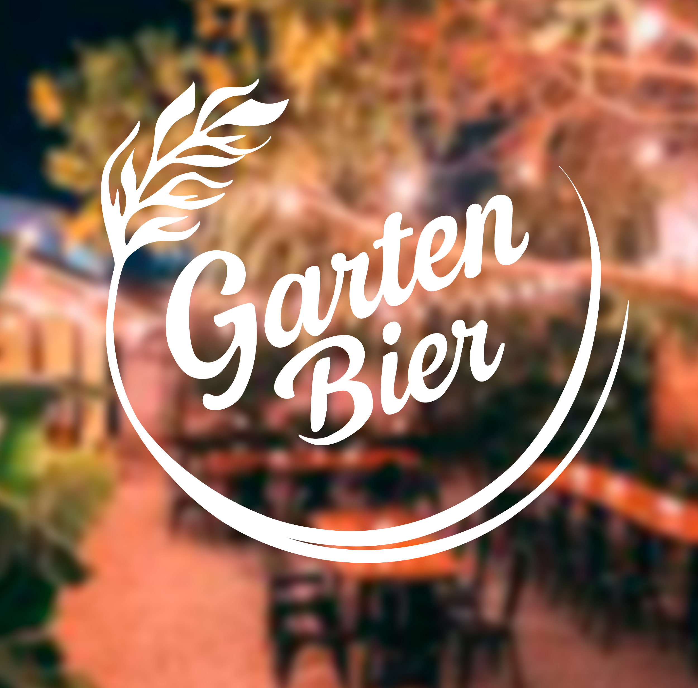

Rediseño
Renovación visual de marca

 

La identidad visual existente no lograba expresar adecuadamente el carácter artesanal y natural de la marca, ni establecer una diferenciación clara dentro del entorno competitivo local.
Desarrollar un rediseño que consolidara los valores esenciales de Garten Bier naturaleza, tradición y cercanía y que permitiera un sistema visual coherente y aplicable a diversos soportes.
Se realizó un análisis de la identidad previa y de la competencia, seguido por la definición de conceptos rectores. A partir de ello se elaboró un nuevo logotipo de líneas orgánicas, una paleta cromática inspirada en tonos naturales y recursos gráficos que refuerzan la idea de origen y artesanía.
La propuesta final establece una identidad visual sólida y coherente, capaz de comunicar de forma clara los valores de la marca y mejorar su posicionamiento mediante una estética más unificada, profesional y representativa.
Misión
Brindar soluciones de calidad que conecten con las necesidades reales de las personas, ofreciendo productos y servicios confiables, funcionales y estéticamente cuidados. La marca busca generar experiencias positivas y significativas, manteniendo un compromiso constante con la mejora, la cercanía y el valor que entrega a su comunidad.
Visión
Consolidar a Garten Bier como una marca reconocida por su autenticidad y calidad, posicionándola como referente de cerveza artesanal mediante una identidad visual distintiva que comunique sus valores de tradición, naturaleza y compromiso con la excelencia.